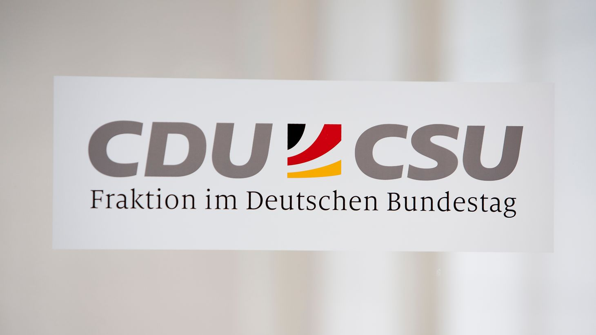

Deux jours après une déroute électorale historique en Mecklembourg-Poméranie occidentale et à Berlin, la réunion du groupe parlementaire CDU/CSU au Bundestag, mardi 22 septembre 2026, s'annonçait explosive. Elle s'est finalement déroulée dans un calme relatif : des critiques sévères ont été exprimées, mais aucune fronde organisée n'a émergé contre le chancelier Friedrich Merz, qui a préféré annuler son déplacement à l'Assemblée générale de l'ONU pour y assister en personne.
Le 20 septembre 2026, deux scrutins régionaux se tenaient le même jour : l'élection du Landtag de Mecklembourg-Poméranie occidentale et celle de la Chambre des députés de Berlin. Le résultat a été un choc pour l'Union chrétienne-démocrate. Dans le Nord-Est, la CDU s'est effondrée à 4,9 % des voix, sous la barre des 5 % requis, et perd donc ses douze sièges : c'est la toute première fois de son histoire que le parti est exclu d'un Parlement régional. L'AfD y arrive largement en tête avec 38,2 %, devant le SPD de la ministre-présidente Manuela Schwesig (35,5 %).
À Berlin, la CDU du maire-président sortant recule fortement, à 18,8 % (−9,5 points, 28 sièges contre 52 auparavant), et se fait devancer par Die Linke, qui devient la première force politique de la capitale avec 25,7 % des voix. La coalition sortante CDU-SPD perd sa majorité. Ce revers berlinois intervient deux semaines seulement après une autre défaite cuisante de la CDU lors des élections régionales de Saxe-Anhalt, qui avait déjà alimenté des spéculations médiatiques sur un possible remplacement du chancelier — spéculations restées sans suite.
Avant même l'ouverture de la réunion, le président du groupe Thorsten Frei et la première secrétaire parlementaire tout juste élue, Catarina dos Santos-Wintz, avaient donné le ton en affirmant publiquement que le chancelier conservait le soutien du groupe. Le président du groupe régional bavarois CSU, Alexander Hoffmann, a tenu des propos similaires. Ce verrouillage en amont a largement désamorcé les scénarios d'un affrontement ouvert redoutés par une partie de la presse.
Défaite électorale de la CDU en Saxe-Anhalt. Le choc dans le parti déclenche de premières spéculations, vite éteintes, sur un changement de chancelier.
« Dimanche noir » : la CDU est exclue du Landtag de Mecklembourg-Poméranie occidentale (4,9 %) et perd la première place à Berlin au profit de Die Linke.
Friedrich Merz annule sa participation au débat général de l'Assemblée générale de l'ONU à New York, prévue le mercredi suivant, afin d'être présent à la réunion du groupe le mardi. Le ministre des Affaires étrangères Johann Wadephul le représentera à New York, comme l'année précédente.
Réunion du groupe CDU/CSU au Bundestag : autocritique du chancelier, charge frontale de l'ex-président de groupe Ralph Brinkhaus, intervention recentrante du ministre du Numérique Karsten Wildberger, puis élection de Johannes Winkel comme vice-président du groupe.
Selon des participants à la réunion, Friedrich Merz a fait acte d'autocritique et est apparu humble face au groupe, qualifiant de nouveau le résultat du 20 septembre de « désastreux ». Mais c'est son prédécesseur à la présidence du groupe, Ralph Brinkhaus, qui a reçu le plus d'applaudissements en formulant une critique de fond : selon le quotidien Bild, il a reproché à la CDU un « déficit de crédibilité et un déficit d'avenir », ainsi qu'un positionnement trop unidimensionnel, estimant que le parti « ne touche plus les citoyens ni les entreprises » et a « perdu son noyau de marque, ce qui rassemblait ».
Malgré cette charge, la colère des députés s'est révélée, selon plusieurs témoignages, davantage tournée vers Die Linke à Berlin que vers le chancelier lui-même. L'ancien président du groupe Jens Spahn, prédécesseur direct de Thorsten Frei, ne se serait pas exprimé pendant la séance.
| Indicateur | Donnée vérifiée |
|---|---|
| CDU en Mecklembourg-Poméranie occ. | 4,9 % — 0 siège (−12) |
| AfD en Mecklembourg-Poméranie occ. | 38,2 % — 32 sièges (1ère force) |
| SPD en Mecklembourg-Poméranie occ. | 35,5 % — 29 sièges |
| CDU à Berlin | 18,8 % — 28 sièges (−24) |
| Die Linke à Berlin | 25,7 % — 38 sièges (1ère force) |
| Effectif du groupe CDU/CSU | 208 député(e)s au Bundestag |
| Nouveau vice-président du groupe | Johannes Winkel (CDU, président de la Junge Union) |
Selon l'entourage du chancelier, la réunion a surtout permis de revenir aux dossiers de fond. Merz aurait insisté pour que la coalition CDU/CSU-SPD mette désormais en œuvre, dès l'automne, les projets déjà actés : la réforme des retraites et celle de la dépendance (Pflegereform). Il aurait également plaidé pour une réintégration progressive des dépenses de défense dans le budget fédéral ordinaire, et prévenu les député(e)s réclamant un allégement fiscal plus large qu'ils devraient, en contrepartie, proposer où réaliser des économies équivalentes.
À l'issue des débats, Johannes Winkel, président de la Junge Union (mouvement de jeunesse de la CDU), a été élu vice-président du groupe parlementaire, en remplacement de Carsten Linnemann, nommé ministre de la Santé en juillet 2026. Cette élection est lue par plusieurs observateurs comme une manière, pour Merz, d'associer plus étroitement à la direction un responsable jusque-là identifié comme critique.
« Notre politique ne touche plus les citoyens ni les entreprises, nous ne sommes pas assez largement positionnés en tant qu'équipe — nous avons perdu notre noyau de marque, ce qui nous rassemblait. »
— Ralph Brinkhaus, ancien président du groupe CDU/CSU, 22 septembre 2026La réunion du 22 septembre a évité de justesse à Friedrich Merz un scénario de crise ouverte, mais elle n'a rien réglé sur le fond. Le verrouillage orchestré par Thorsten Frei et l'intervention de Karsten Wildberger ont suffi à canaliser la colère du groupe, sans effacer le constat posé par Ralph Brinkhaus : un déficit de crédibilité qui a coûté à la CDU sa première défaite historique dans un Landtag et sa première place dans la capitale. Les sondages publiés dans la foulée des deux scrutins, qui montrent une majorité de l'opinion favorable à une démission du chancelier, rappellent que le sursis accordé par la fraction reste conditionné aux résultats concrets des réformes annoncées pour l'automne — retraites, dépendance, budget de la défense. À défaut de résultats tangibles avant les prochains scrutins régionaux, le répit du 22 septembre pourrait n'avoir été qu'un ajournement.
Zwei Tage nach einer historischen Wahlschlappe in Mecklenburg-Vorpommern und Berlin galt die Sitzung der CDU/CSU-Bundestagsfraktion am Dienstag, dem 22. September 2026, als potenziell brisant. Sie verlief letztlich vergleichsweise ruhig: Es gab scharfe Kritik, doch keine organisierte Revolte gegen Bundeskanzler Friedrich Merz, der zugunsten seiner Teilnahme seine Reise zur UN-Generaldebatte in New York absagte.
Am 20. September 2026 fanden gleich zwei Landtags- bzw. Abgeordnetenhauswahlen statt: in Mecklenburg-Vorpommern und in Berlin. Das Ergebnis war ein Schock für die Union. Im Nordosten stürzte die CDU auf 4,9 Prozent ab, unter die Fünf-Prozent-Hürde, und verlor damit alle zwölf Sitze: Es ist das erste Mal in ihrer Geschichte, dass die Partei aus einem Landesparlament herausgewählt wurde. Die AfD wurde mit 38,2 Prozent klar stärkste Kraft, vor der SPD von Ministerpräsidentin Manuela Schwesig (35,5 Prozent).
In Berlin verlor die CDU des scheidenden Regierenden Bürgermeisters deutlich, auf 18,8 Prozent (−9,5 Punkte, 28 statt zuvor 52 Sitze), und wurde von Die Linke überholt, die mit 25,7 Prozent stärkste politische Kraft der Hauptstadt wurde. Die bisherige CDU-SPD-Koalition verlor ihre Mehrheit. Diese Berliner Niederlage folgte nur zwei Wochen nach einer weiteren schweren Wahlschlappe der CDU bei der Landtagswahl in Sachsen-Anhalt, die bereits medial befeuerte Spekulationen über einen möglichen Kanzleraustausch ausgelöst hatte — Spekulationen, die im Sande verliefen.
Noch vor Beginn der Sitzung hatten Fraktionschef Thorsten Frei und die frisch gewählte Erste Parlamentarische Geschäftsführerin Catarina dos Santos-Wintz öffentlich den Ton gesetzt: Der Kanzler habe die Rückendeckung der Fraktion. Auch CSU-Landesgruppenchef Alexander Hoffmann äußerte sich gleichlautend. Diese Vorab-Absicherung entschärfte die von Teilen der Presse befürchtete offene Konfrontation erheblich.
Wahlniederlage der CDU in Sachsen-Anhalt. Der Schock in der Partei löst erste, schnell wieder verebbende Spekulationen über einen Kanzlerwechsel aus.
„Schwarzer Sonntag": Die CDU wird aus dem Landtag von Mecklenburg-Vorpommern herausgewählt (4,9 %) und verliert in Berlin den Spitzenplatz an Die Linke.
Friedrich Merz sagt seine Teilnahme an der UN-Generaldebatte in New York, die für den folgenden Mittwoch vorgesehen war, ab, um bei der Fraktionssitzung am Dienstag anwesend zu sein. Außenminister Johann Wadephul wird Deutschland wie im Vorjahr in New York vertreten.
Sitzung der CDU/CSU-Fraktion im Bundestag: Selbstkritik des Kanzlers, frontale Kritik des früheren Fraktionschefs Ralph Brinkhaus, stimmungsdrehende Rede von Digitalminister Karsten Wildberger, anschließend Wahl von Johannes Winkel zum stellvertretenden Fraktionsvorsitzenden.
Nach Angaben von Teilnehmenden übte Friedrich Merz Selbstkritik und wirkte demütig gegenüber der Fraktion; er sprach erneut von einem „desaströsen" Wahlergebnis. Den meisten Applaus erhielt jedoch sein Vorgänger im Fraktionsvorsitz, Ralf Brinkhaus, mit einer grundsätzlichen Kritik: Laut der Bild-Zeitung attestierte er der CDU ein „Glaubwürdigkeitsdefizit und ein Zukunftsdefizit" sowie eine zu eindimensionale Aufstellung. Die Politik der Partei komme „bei den Menschen und den Unternehmen nicht an", man sei „vom Team nicht breit genug aufgestellt" und habe den „Markenkern, das Verbindende, verloren".
Trotz dieser Attacke richtete sich die größere Empörung der Abgeordneten laut mehreren Berichten eher gegen Die Linke in Berlin als gegen den Kanzler selbst. Der frühere Fraktionschef Jens Spahn, unmittelbarer Vorgänger von Thorsten Frei, soll sich während der Sitzung nicht zu Wort gemeldet haben.
| Kennzahl | Verifizierter Wert |
|---|---|
| CDU in Mecklenburg-Vorpommern | 4,9 % — 0 Sitze (−12) |
| AfD in Mecklenburg-Vorpommern | 38,2 % — 32 Sitze (stärkste Kraft) |
| SPD in Mecklenburg-Vorpommern | 35,5 % — 29 Sitze |
| CDU in Berlin | 18,8 % — 28 Sitze (−24) |
| Die Linke in Berlin | 25,7 % — 38 Sitze (stärkste Kraft) |
| Fraktionsstärke CDU/CSU | 208 Bundestagsabgeordnete |
| Neuer stv. Fraktionsvorsitzender | Johannes Winkel (CDU, JU-Vorsitzender) |
Aus dem Umfeld des Kanzlers hieß es, die Sitzung habe vor allem den Weg zurück zu inhaltlichen Themen geebnet. Merz habe darauf bestanden, dass die Koalition aus CDU/CSU und SPD nun im Herbst die bereits vereinbarten Vorhaben umsetzen müsse: die Renten- und die Pflegereform. Zudem habe er sich dafür ausgesprochen, die Verteidigungsausgaben perspektivisch wieder in den regulären Haushalt zu überführen, und Abgeordnete, die eine größere steuerliche Entlastung fordern, aufgefordert, im Gegenzug Vorschläge für entsprechende Einsparungen zu machen.
Im Anschluss an die Aussprache wurde Johannes Winkel, Vorsitzender der Jungen Union, zum stellvertretenden Fraktionsvorsitzenden gewählt — als Ersatz für Carsten Linnemann, den Merz im Juli 2026 zum Gesundheitsminister ernannt hatte. Mehrere Beobachter deuten diese Wahl als Versuch von Merz, einen bislang kritischen Nachwuchspolitiker enger in die Fraktionsführung einzubinden.
„Unsere Politik kommt bei den Menschen und den Unternehmen nicht an, wir sind vom Team nicht breit genug aufgestellt — wir haben unseren Markenkern, das Verbindende, verloren."
— Ralf Brinkhaus, ehemaliger Fraktionsvorsitzender CDU/CSU, 22. September 2026Die Sitzung vom 22. September hat Friedrich Merz nur knapp vor einem offenen Krisenszenario bewahrt, an der Substanz jedoch nichts geändert. Der von Thorsten Frei orchestrierte Rückhalt und die Rede von Karsten Wildberger reichten aus, um den Unmut der Fraktion zu kanalisieren, ohne die von Ralf Brinkhaus formulierte Diagnose zu entkräften: ein Glaubwürdigkeitsdefizit, das die CDU ihre erste historische Niederlage in einem Landtag und den Spitzenplatz in der Hauptstadt gekostet hat. Umfragen, die im Anschluss an die beiden Wahlen veröffentlicht wurden und eine Mehrheit für einen Rücktritt des Kanzlers zeigen, erinnern daran, dass der von der Fraktion gewährte Aufschub an handfeste Ergebnisse der für den Herbst angekündigten Reformen geknüpft bleibt — Rente, Pflege, Verteidigungshaushalt. Bleiben greifbare Ergebnisse vor den nächsten Landtagswahlen aus, könnte sich die Verschnaufpause vom 22. September als bloßer Aufschub erweisen.